Reader Mode
A calm, reading-focused experience for browsing projects and guides.

Breaking through the gloom, a solitary beam of light.
Guidelume can be experienced in two different ways.
A calm, reading-focused experience for browsing projects and guides.
Explore an interactive desktop with draggable windows and appearance choices.
You can change your experience later from Guidelume's settings.
Loading README…
This will reset all saved Guidelume settings and restart setup. If you arrived from Nexus, consider opening Guidelume Setup instead.
Drag windows by their title bars and drag desktop icons to arrange your workspace.
Use the Start menu’s Settings panel for desktop adjustments, including colors, backgrounds, taskbar position, and CRT effects.
Personalize the look of Guidelume.
Adjust your theme, background, and taskbar position.
More features will come with time.
Choose a comfortable text size.
Alternative FontReplaces the default Quicksand with Lexend.
When enabled, window opening and closing animations are turned off.